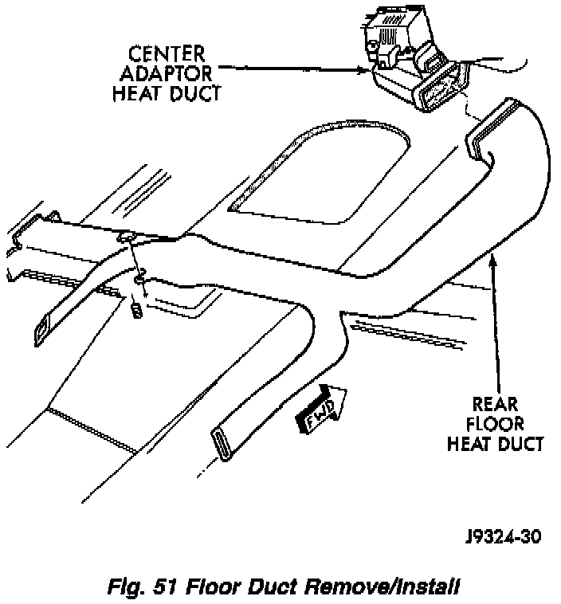

Floor Duct Replacement
FLOOR DUCTS1. Remove the center floor console.
2. Remove the right front seat.
3. Remove the right side front door opening trim.
4. Roll back the floor carpeting.
Fig.51 Floor Duct Remove/Install:

5. Remove the nut that secures the floor duct to the stud on the floor pan transmission tunnel.
6. Disconnect the floor duct from the center adaptor duct.
7. Remove the floor duct from the vehicle.
8. Reverse the removal procedures to install.